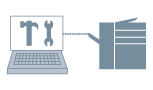

Если Вы желаете печатать с использованием подключенных к принтеру установок (секций для бумаги, финишеры и т.д.), необходимо определить настройки параметров на драйвере.
Как правило, данные параметры задаются автоматически при установке драйвера. Если они не были заданы автоматически, выполните описанную ниже процедуру.

1.
Откройте вкладку [Настройки устройства].
Нажмите [ ] (Пуск) → [Устройства и принтеры].
] (Пуск) → [Устройства и принтеры].
] (Пуск) → [Устройства и принтеры].Выше указаны действия в ОС Windows 7 и Server 2008 R2.
В ОС Windows 10: нажмите [Параметры] → [Устройства] → [Принтеры и сканеры] → [Сопутсвующие параметры] → [Устройства и принтеры].
В ОС Windows 8, 8.1, Server 2012 и Server 2012 R2: на рабочем столе выдвиньте боковую панель с правой стороны экрана и выберите пункты [ Параметры] → [Панель управления] → [Устройства и принтеры].
Параметры] → [Панель управления] → [Устройства и принтеры].
Параметры] → [Панель управления] → [Устройства и принтеры].В ОС Windows Vista и Server 2008: Нажмите [] (Пуск) → [Панель управления] → [Принтеры].
] (Пуск) → [Панель управления] → [Принтеры].В ОС Windows Server 2003 и Server 2003 R2: нажмите [Пуск] → [Принтеры и факсы] (или [Пуск] → [Панель управления] → [Принтеры и другое оборудование] → [Принтеры и факсы]).
Щелкните правой кнопкой мыши значок принтера, который Вы желаете определить → нажмите [Свойства принтера] (или [Свойства]).
Выберите вкладку [Настройки устройства].
2.
Нажмите [Опред-е сост. устройства].
Получение информации о принтере и автоматическая определяет настройки для следующих параметров:
[Параметры источника бумаги], [Параметры вывода], [Количество секций], [Устройство вставки], [Блок двухсторонней печати], [Установленный жесткий диск], [3-сторонний блок], [Установленная SD карточка] и [Функция защищенного фонового изображения устройства]/[Функция защищенной печати устройства]
Если информацию получить невозможно, определите настройки на этапе 3.
3.
Подтвердите и/или определите настройки подключенных к принтеру параметров → нажмите [Применить].
Необходимые условия
Учетная запись с разрешением на полный доступ к принтеру
При получении информации о принтере с компьютера клиента в среде общего принтера: Установка на сервере Canon Driver Information Assist Service (можно установить с помощью программы установки драйвера принтера)